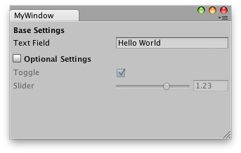

Extending the Editor
Introduction
You can create your own custom design tools inside Unity through Editor Windows. Scripts that derive from EditorWindow instead of MonoBehaviour can leverage both GUI/GUILayout and EditorGUI/EditorGUILayout controls. Alternatively, you can use Custom Inspectors to expose these GUI controls in your GameObject Inspector.
Editor Windows
You can create any number of custom windows in your app. These behave just like the Inspector, Scene or any other built-in ones. This is a great way to add a user interface to a sub-system for your game.

Custom Editor Interface by Serious Games Interactive used for scripting cutscene actions
Making a custom Editor Window involves the following simple steps:
- Create a script that derives from EditorWindow.
- Use code to trigger the window to display itself.
- Implement the GUI code for your tool.
Derive From EditorWindow
In order to make your Editor Window, your script must be stored inside a folder called "Editor". Make a class in this script that derives from EditorWindow. Then write your GUI controls in the inner OnGUI function.
class MyWindow extends EditorWindow {
function OnGUI () {
// The actual window code goes here
}
}
MyWindow.js - placed in a folder called 'Editor' within your project.
Showing the window
In order to show the window on screen, make a menu item that displays it. This is done by creating a function which is activated by the MenuItem property.
The default behavior in Unity is to recycle windows (so selecting the menu item again would show existing windows. This is done by using the function EditorWindow.GetWindow Like this:
class MyWindow extends EditorWindow {
@MenuItem ("Window/My Window")
static function ShowWindow () {
EditorWindow.GetWindow (MyWindow);
}
function OnGUI () {
// The actual window code goes here
}
}
Showing the MyWindow
This will create a standard, dockable editor window that saves its position between invocations, can be used in custom layouts, etc. To have more control over what gets created, you can use GetWindowWithRect
Implementing Your Window's GUI
The actual contents of the window are rendered by implementing the OnGUI function. You can use the same UnityGUI classes you use for your ingame GUI (GUI and GUILayout). In addition we provide some additional GUI controls, located in the editor-only classes EditorGUI and EditorGUILayout. These classes add to the controls already available in the normal classes, so you can mix and match at will.
The following C# code shows how you can add GUI elements to your custom EditorWindow:
using UnityEditor;
using UnityEngine;
public class MyWindow : EditorWindow
{
string myString = "Hello World";
bool groupEnabled;
bool myBool = true;
float myFloat = 1.23f;
// Add menu item named "My Window" to the Window menu
[MenuItem("Window/My Window")]
public static void ShowWindow()
{
//Show existing window instance. If one doesn't exist, make one.
EditorWindow.GetWindow(typeof(MyWindow));
}
void OnGUI()
{
GUILayout.Label ("Base Settings", EditorStyles.boldLabel);
myString = EditorGUILayout.TextField ("Text Field", myString);
groupEnabled = EditorGUILayout.BeginToggleGroup ("Optional Settings", groupEnabled);
myBool = EditorGUILayout.Toggle ("Toggle", myBool);
myFloat = EditorGUILayout.Slider ("Slider", myFloat, -3, 3);
EditorGUILayout.EndToggleGroup ();
}
}
This example results in a window which looks like this:

Custom Editor Window created using supplied example.
Custom Editor Window created using supplied example.
For more info, take a look at the example and documentation on the EditorWindow page.
Custom Inspectors
A key to increasing the speed of game creation is to create custom inspectors for commonly used components. For the sake of example, we'll use this very simple script that always keeps an object looking at a point.
var lookAtPoint = Vector3.zero;
function Update () {
transform.LookAt (lookAtPoint);
}
LookAtPoint.js
This will keep an object oriented towards a world-space point. Let's make it cool!
The first step to making it work nicely in the editor is to make the script run even when you're not testing the game. We do this by adding an ExecuteInEditMode attribute to it:
@script ExecuteInEditMode()
var lookAtPoint = Vector3.zero;
function Update () {
transform.LookAt (lookAtPoint);
}
Try adding the script to your main camera and drag it around in the Scene view.
Making a Custom Editor
This is all well and good, but we can make the inspector for it a lot nicer by customizing the inspector. To do that we need to create an Editor for it. Create a JavaScript called LookAtPointEditor in a folder called Editor.
@CustomEditor (LookAtPoint)
class LookAtPointEditor extends Editor {
function OnInspectorGUI () {
target.lookAtPoint = EditorGUILayout.Vector3Field ("Look At Point", target.lookAtPoint);
if (GUI.changed)
EditorUtility.SetDirty (target);
}
}
This class has to derive from Editor. The @CustomEditor attribute informs Unity which component it should act as an editor for.
The code in OnInspectorGUI is exectued whenever Unity displays the inspector. You can put any GUI code in here - it works just like OnGUI does for games, but is run inside the inspector. Editor defines the target property that you can use to access the object being inspected.
The EditorUtility.SetDirty code is executed if the user has changed any of the values by checking GUI.changed.
In this case, we make one of the Vector3 fields like is used in the Transform Inspector - like so:

Yay for shiny inspectors
There's a lot more that can be done here, but this will do for now - We've got bigger fish to fry...
Scene View Additions
You can add extra code to the Scene View by implementing an OnSceneGUI in your custom editor. In this case, we'll add a second set of position handles, letting users drag the look-at point around in the Scene view.
@CustomEditor (LookAtPoint)
class LookAtPointEditor extends Editor {
function OnInspectorGUI () {
target.lookAtPoint = EditorGUILayout.Vector3Field ("Look At Point", target.lookAtPoint);
if (GUI.changed)
EditorUtility.SetDirty (target);
}
function OnSceneGUI () {
target.lookAtPoint = Handles.PositionHandle (target.lookAtPoint, Quaternion.identity);
if (GUI.changed)
EditorUtility.SetDirty (target);
}
}
OnSceneGUI works just like OnInspectorGUI - except it gets run in the scene view. To help you make your editing interface, you can use the functions defined in Handles class. All functions in there are designed for working in 3D Scene views.
If you want to put 2D GUI objects (GUI, EditorGUI and friends), you need to wrap them in calls to Handles.BeginGUI() and Handles.EndGUI().
Page last updated: 2012-05-31